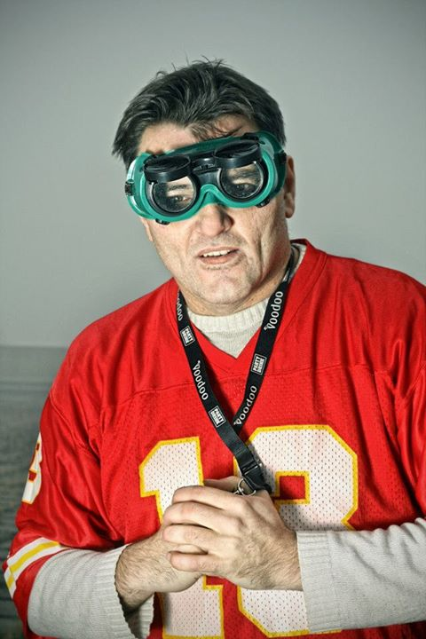

Booking · kontakt
Zakaži nastup
Klubovi, festivali, škole, biblioteke, kulturni centri i privatni događaji. Osam različitih programa — od live rap nastupa do književnog večeri i filmske projekcije.

Programi

Uživo · KST, 2014
Kakva je to pesma
Otvaranje KST bašte. Više snimaka sa nastupa na strani Muzika.
- Srbija
- Slovenija
- Bosna i Hercegovina
- Makedonija
- Hrvatska
- Crna Gora
Nastupao širom bivše Jugoslavije, organizovao brojne humanitarne koncerte.
Pošalji upit
Popuni šta znaš — otvoriće se tvoj mejl program sa gotovom porukom za popajvudu@gmail.com. Za sve ostalo (saradnje, mediji, pitanja) izaberi „Nešto drugo“.